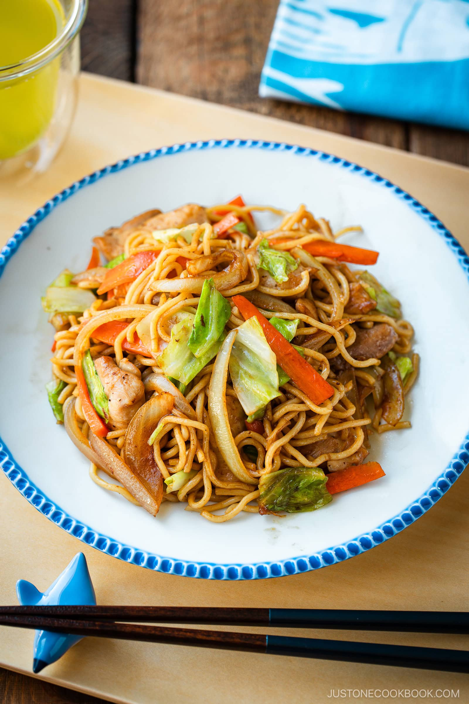

Yakisoba

Description
With crisp veggies and protein tossed in yellow Chinese-style wheat noodles, chicken yakisoba makes a complete one-pan dinner.
Ingredients
- Yakisoba noodles
- Boneless chicken thighs
- Green cabbage
- Onion
- Carrot
- Yakisoba sauce
- Salt and ground pepper
- Neutral oil
Steps
- Cut the veggies. Slice the cabbage leaves into squares and the onion and carrot into thin strips.
- Prep the chicken and noodles. Slice the thigh meat into flat, even pieces and fluff the yakisoba noodles with your hands.
- Stir-fry the onions and chicken. Spread out the ingredients so they char nicely on the hot pan or griddle. Cook until no longer pink.
- Add the cabbage and carrot. Keep tossing until tender to let the steam evaporate so the stir-fry stays dry.
- Add the noodles, then the sauce. Toss in the noodles, letting the steam escape, until heated and slightly charred. Add the sauce and toss.
- Serve on an individual plate and enjoy!
Home